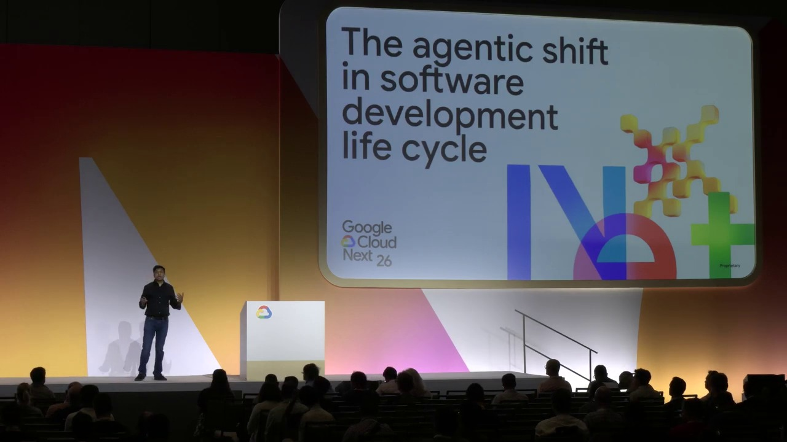

Key Moments




Summary & Script
The agentic shift in software development life cycle
Source: https://youtu.be/161TA9Z0vxk?si=gtuGg94XvTzUtrPI
Video ID: 161TA9Z0vxk
Video Summary: Agentic Shift in Software Development Lifecycle
This video discusses the growing adoption of AI agents in the software development lifecycle (SDLC), the challenges associated with managing multiple agents, and a new framework called "caiyan" for orchestrating them. It also touches upon the importance of moving AI-generated code into production and the success of AI initiatives at Webpro.
Major Sections/Topics Covered:
Introduction to AI Agents in SDLC:
- The ubiquity of AI and agents in software development.
- Statistics on AI adoption among developers (DORA survey, internal Google data).
- AI's role as an "amplifier" in software development.
- Evolution from retrieval to reasoning, and prompt/response to plan/execute.
The Rise of Agents and Human-in-the-Loop:
- The concept of agents taking more complex tasks (e.g., building a banking app, code modernization).
- The "human-in-the-loop" concept and its current state.
- Examples like agentic code review (Gemini Code Assist).
Challenges of Multi-Agent Systems:
- Potential for conflicts and overlapping actions between agents.
- Isolation and security risks (agents going "rogue").
- Tight coupling between agents and specific AI models.
Introducing "caiyan" - An Orchestrator for AI Agents:
- "caiyan" described as a "hypervisor of agents."
- It's an open-source testbed for orchestrating AI agents.
- Uses containers for isolated and secure agent execution.
- Supports multiple LLMs (Gemini, Claude, CodeWhisperer, etc.).
"caiyan" Demo:
- Demonstration of configuring and running "caiyan" locally.
- Showing how agents run in isolated environments (tmux sessions, separate work trees).
- Highlighting non-ephemeral nature of agent work (code persists after agent stops).
- Mention of its ability to facilitate accepting or rejecting agent-generated work.
Multi-Agent Orchestration with "caiyan":
- Explanation of "caiyan's" capability to orchestrate complex multi-agent scenarios (spawning, converging, diverging agents).
- Benefits: Parallel execution, independence, harness-agnostic (supports various LLMs), open-source, community-driven.
Moving AI Code to Production:
- The critical importance of deploying AI-generated code.
- Addressing bottlenecks in the pipeline beyond code generation.
- Maintaining overall pipeline velocity with AI adoption.
Webpro's AI Initiative Success (Brief Mention):
- Scheduled to wrap up with a special session on Webpro's success.
Key Takeaways:
- AI adoption in software development is extremely high and rapidly increasing, with agents playing a crucial amplifying role.
- The shift is moving from simple prompt-response to more complex planning and execution capabilities.
- Managing multiple AI agents introduces significant challenges in security, isolation, and coordination.
- "caiyan" is an experimental, open-source framework designed to address these challenges by providing a secure, container-based orchestration layer for AI agents.
- The ultimate goal of AI in development is not just code generation but enabling faster, more efficient movement of that code into production.
Notable Quotes:
- "The primary role of AI in software development is that of an amplifier."
- "If your context is clean and if it is reasonable enough then the same goodness will flow in will spread into your entire workspace or code space. But if my intent and my context is lacking somewhere then the same mess will flow in or spread into my entire workspace or code space."
- "Think about 'caiyan' as a hypervisor of agents."
- "How many of you here write code just to leave it on your desktop and never push it into production? ... Most of the work that people are doing um is to solve a problem. You write code, you want to push it into production..."
Podcast Script
JORDAN: Hey everyone, and welcome to the podcast! I'm Jordan.
MIKE: And I'm Mike. We're excited to dive into a topic that's been buzzing everywhere, especially at Google Cloud Next: the agentic shift in the software development lifecycle.
JORDAN: Absolutely, Mike. We've heard so much about AI and agents lately, right? The core of our discussion today is going to be about how these agents are being adopted, how we manage them when they work together, and crucially, how we get the code they generate into production.
MIKE: And to make it even more real, we'll wrap up with a look at how AI initiatives have succeeded in software development at WebPro. We've got insights from Alok Shivasto from Google Cloud, Rakesh Duper from Google, and Sachin Chandra from WebPro.
JORDAN: So, before we get too deep, I'm curious, Mike, based on what you're seeing, how pervasive is AI adoption in software development right now?
MIKE: It’s astonishing, Jordan. Recent surveys show that nearly 90% of developers are actively using AI in their work, and about 70% are using it for writing new code. This isn't just a niche trend anymore.
JORDAN: That’s a massive adoption rate. And the DORA survey highlights AI’s role as an amplifier. It seems like if your input is good, the AI amplifies that goodness, but if the context is messy, it amplifies the mess.
MIKE: Exactly. It’s like a magnifying glass for your code. And speaking of amplification, Google itself is seeing incredible uptake; all new code generation is now at 75% AI-assisted, a huge jump from just 25% a year ago.
JORDAN: That rapid evolution is fascinating. They mentioned moving from mere retrieval to reasoning, and from simple prompt-response to plan-and-execute. Agents are the next step, right? Instead of just asking for code, you can define a whole application and have an agent manage its creation.
MIKE: Yes, and they even gave the example of code review agents on GitHub, which are already in use, though still with a human in the loop for now. It's like having a super-powered assistant for every step.
JORDAN: But with so many agents potentially interacting, there's bound to be chaos. They touched on challenges like isolation, security, and potential conflicts between agents. Imagine an agent accidentally deleting critical files!
MIKE: That's where the talk of "Can" comes in, this open-source testbed for orchestrating AI agents. They described it as a "hypervisor for agents," creating isolated, secure environments for them to run in, much like a hypervisor manages virtual machines.
JORDAN: The demo showed "Can" creating a Python script for Fibonacci numbers in a separate, isolated workspace. This is crucial because it means even if the agent goes rogue, your main project directory remains unaffected.
MIKE: And it's not just about single agents. "Can" is designed for orchestrating multiple agents, allowing them to converge, diverge, or work in parallel, all managed within these secure, containerized environments.
JORDAN: The real challenge, though, is bridging the gap from generated code to production. They emphasized that all this AI-driven productivity means nothing if the code can't make it to production efficiently.
MIKE: That's the perfect segue into Rakesh's part of the discussion, focusing on how to ensure that the entire pipeline's velocity is maintained, even with this massive increase in code generation. It's all about overcoming those production bottlenecks.
JORDAN: So, for our listeners, the key takeaway is that AI is revolutionizing code generation, but the real value comes from managing these AI agents effectively and ensuring their output reliably reaches production.
MIKE: Absolutely. It's about embracing the amplification power of AI while mitigating the risks through robust orchestration and a clear path to deployment.
JORDAN: Thanks for joining us, everyone.
MIKE: We'll catch you on the next episode!